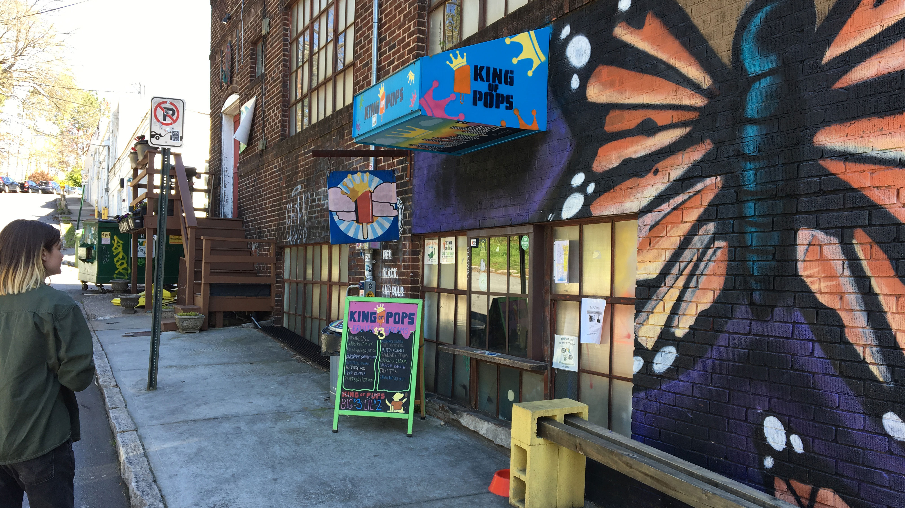
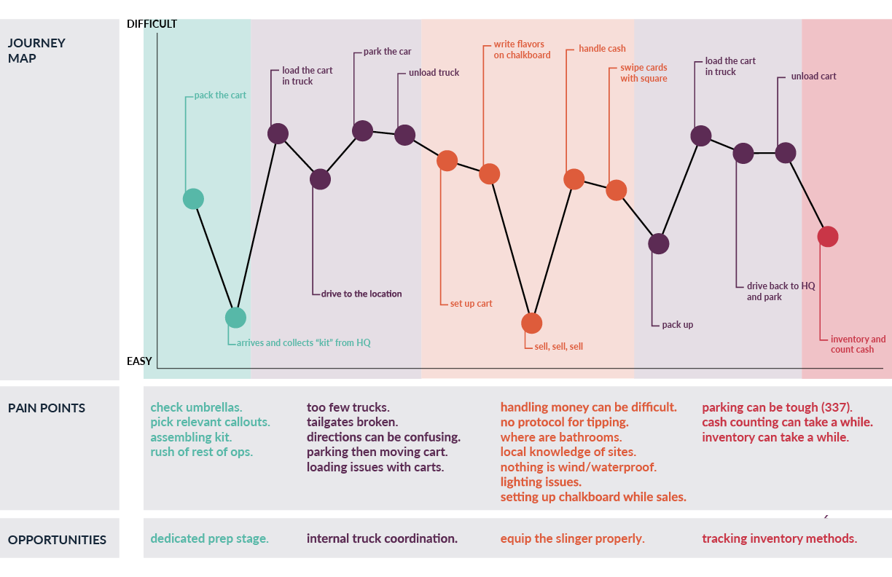
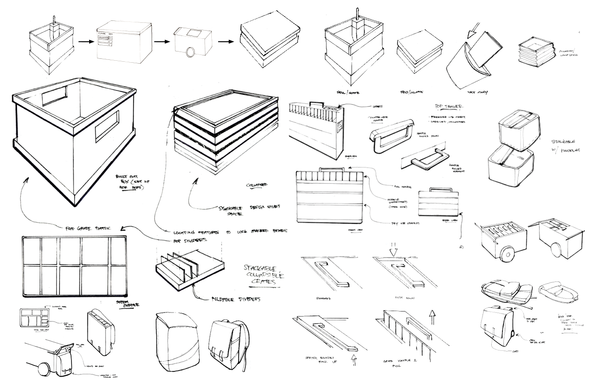
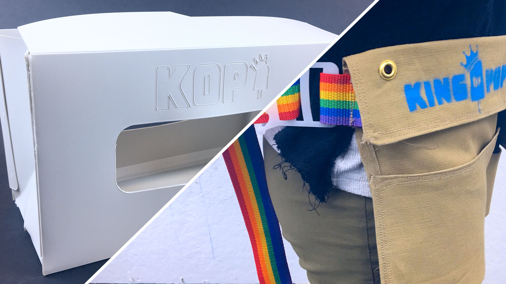

We began working with local Atlanta popsicle maker, King of Pops (KoP), through in-depth personal research. We shadowed popsicle sellers (affectionately called “slingers”), toured their facilities, conducted semi-structured and informal interviews, and dissected their corporate brand.
We created journey maps, identifying pain points, gain points, and potential opportunities to improve customer experiences. Our team focused on improving slinger resources and support, the front-facing side of the brand and essential to KoP.


After synthesizing our research insights in presentations to our client, we ideated concepts that were in-line with their values - creating sketches and storyboards.
We prototyped and presented a line of new sustainable products that streamlined a more holistic process than existing, disjointed solutions while enhancing the slinger experience to better represent their brand.
